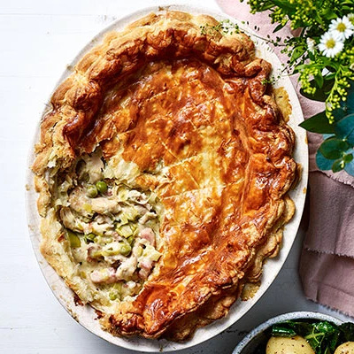

Projects
Recipes
Contact
Spring Chicken Pot Pie

Celebrate Easter with this spring chicken pot pie. It's kinder on your wallet than the traditional roast lamb, and equally enjoyable
Serves 6 | Takes 80 mins
Original recipe:
https://www.bbcgoodfood.com/recipes/spring-chicken-pot-pie
main
dairy
egg
gluten
meat
mustard
Ingredients
4-6 skinless, boneless chicken thighs
1 tbsp olive oil
100g smoked bacon lardons
2 leeks, sliced
3 tbsp plain flour
100ml white wine (or extra stock)
200ml chicken stock
200g crème fraîche
100g frozen or fresh podded peas
1½ tbsp Dijon mustard
small bunch of tarragon, chopped
1 egg, beaten
320g sheet puff pastry
Method
Season the chicken thighs with salt and pepper. Heat the oil in a heavy-based saucepan and fry the chicken for 3-4 mins on each side until lightly golden, then transfer to a plate. Add the bacon to the pan and fry for 5 mins until golden. Tip in the leeks and fry for another 5 mins.
Sprinkle the flour over the leeks and bacon, and stir until combined. Add the wine, if using, and bubble for a few minutes, then add the stock and stir well. Slice the chicken and return it to the pan – don’t worry if it’s not fully cooked through at this point, it will finish cooking in the oven.
Stir in the crème fraîche, peas, 1 tbsp mustard and the tarragon, and bubble for a few minutes until thick and saucy. Add a splash more stock or water if it seems too thick. Remove the pie filling from the heat. Whisk the remaining ½ tbsp mustard with the egg in a bowl.
Heat the oven to 200C/180C Fan/Gas 6. Spoon the filling into a pie dish with a lip and use some of the egg mix to brush the sides of the dish. Unroll the pastry over the top of the pie and crimp the edges against the sides of the dish, then cut away any excess with a knife. Will keep frozen, well covered, for up to three months.
Brush the remaining egg glaze over the pie and make a small steam hole in the middle. Bake for 40 mins until golden and puffed. Serve with buttered new potatoes and steamed greens or carrots, if you like.